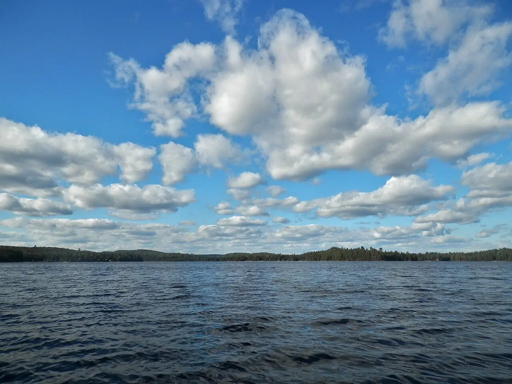

Canoe Lake — Algonquin
Ontario, Canada · kayak, paddle, baignade

Lac du parc provincial Algonquin, principal point de départ des sorties en canot et kayak le long de la route 60. Il ouvre un immense réseau de lacs et de portages au cœur de la forêt boréale.
- Lieu
- Ontario, Canada
- Niveau
- Débutant
- Activités
- kayak, paddle, baignade
- Type d'eau
- lake
- Coordonnées
- 45.53, -78.71 (position approximative du secteur)
Dangers à connaître
- Vent qui lève des vagues sur les grands lacs ouverts : longe les rives.
- Eau froide au printemps et en automne.
- Ours noirs dans l’arrière-pays : suspends ta nourriture en camping.
Le conseil d'Ocean Buddy
Pour une journée, loue sur place et reste près des rives ; pour dormir en camping sauvage, réserve ton permis à l’avance.
Ouvrir dans Ocean Buddy Télécharger sur l'App Store
Source : Fiche Ocean Buddy · septembre 2026 · à vérifier localement.